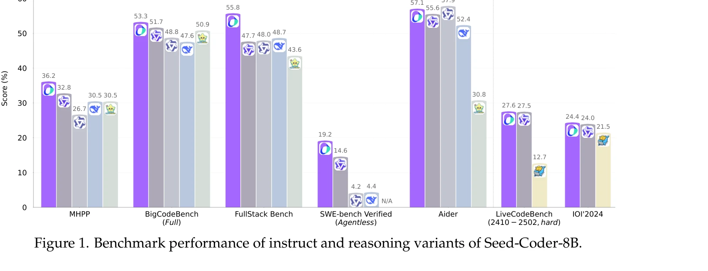

Essence

Figure 2. Processing pipeline for pretraining data. We collected data from GitHub and web archives.
Seed-Coder는 손수 작성한 필터링 규칙 대신 LLM 기반 점수 매기기 및 필터링을 사용하는 모델 중심 데이터 파이프라인으로 코드 사전학습 데이터를 자동으로 큐레이션하며, 8B 규모의 기본·명령·추론 모델을 제시한다.
저자: ByteDance Seed, Yuyu Zhang, Jing Su, Yifan Sun, Chenguang Xi, Xia Xiao, Zheng Shen, A. Q. Zhang, Kaibo Liu, Daoguang Zan, Tao Sun, J. Zhu, Shijie Xin, Dong Huang, Y. Bai, Lixin Dong, C. J. Li, Jianchong Chen, Hao Zhou, Yifan Huang | 날짜: 2025 | URL: https://arxiv.org/abs/2506.03524
Figure 2. Processing pipeline for pretraining data. We collected data from GitHub and web archives.
Seed-Coder는 손수 작성한 필터링 규칙 대신 LLM 기반 점수 매기기 및 필터링을 사용하는 모델 중심 데이터 파이프라인으로 코드 사전학습 데이터를 자동으로 큐레이션하며, 8B 규모의 기본·명령·추론 모델을 제시한다.

Figure 1. Benchmark performance of instruct and reasoning variants of Seed-Coder-8B.
Figure 2. Processing pipeline for pretraining data. We collected data from GitHub and web archives.
총평: Seed-Coder는 코드 사전학습 데이터 큐레이션의 패러다임을 hand-crafted 규칙에서 LLM 기반 자동화로 전환하며, 실용적이면서도 강력한 8B 모델을 통해 이 접근법의 효과를 명확히 입증한다. 확장 가능성과 객관성 측면에서 중요한 기여이나, 대규모 모델 및 필터 편향 분석에 대한 추가 탐구가 필요하다.